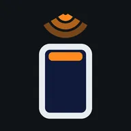
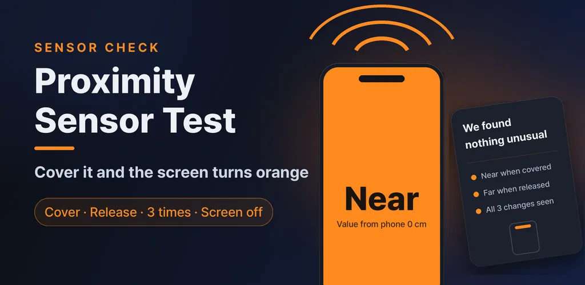
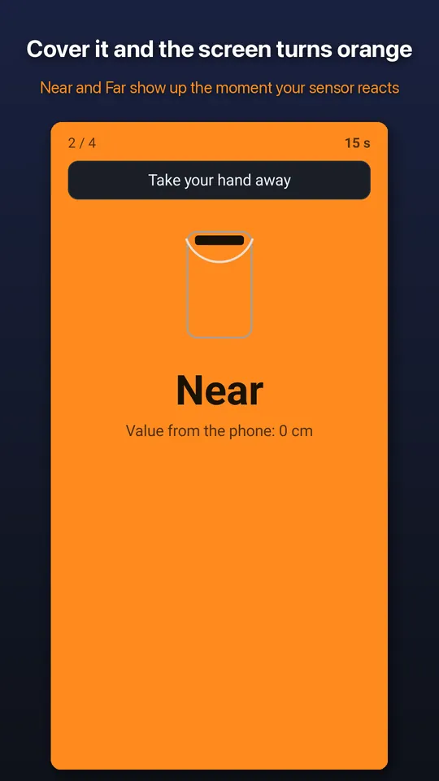
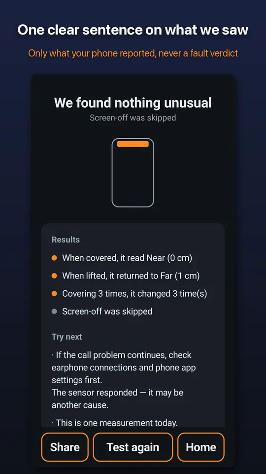
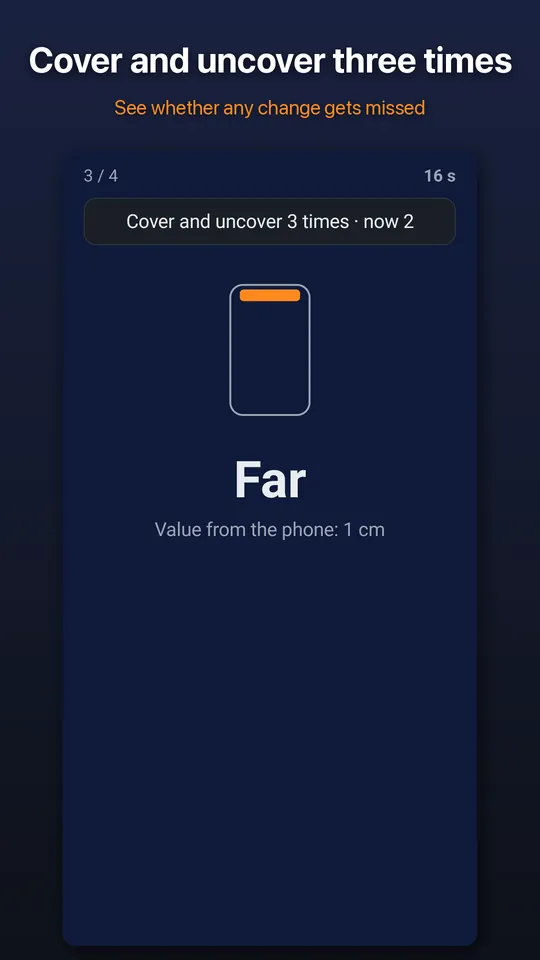
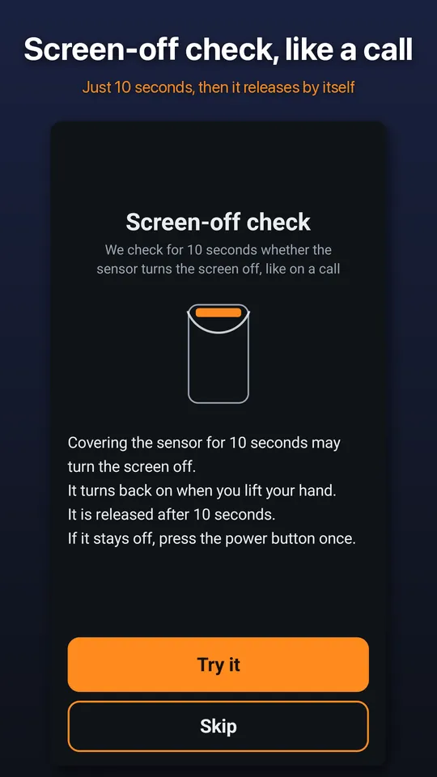
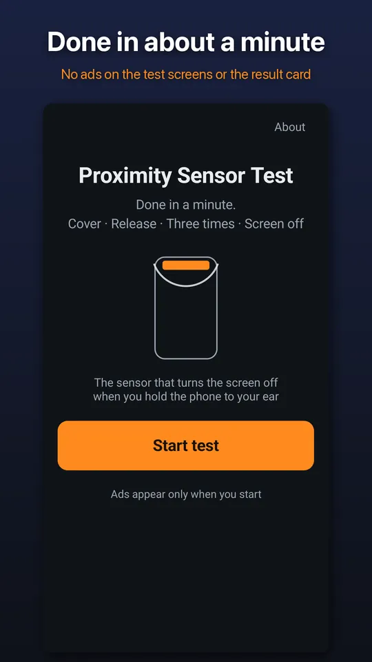
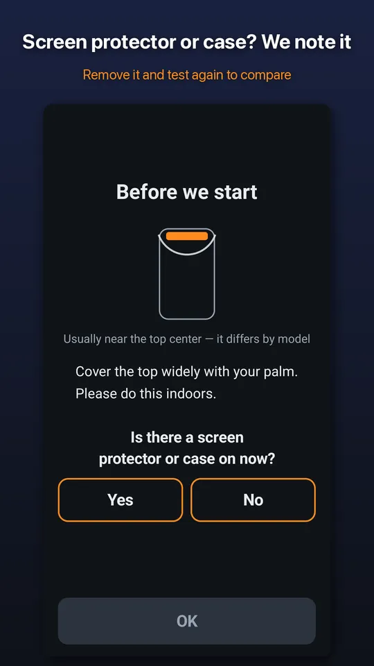

Proximity Sensor Test & Check
Does your proximity sensor respond? Cover, uncover 3 times, screen-off check







About this app
Does your screen stay on during calls so your cheek presses buttons? Or does it go dark and not come back?
Proximity Sensor Test checks, in about a minute, whether your phone's proximity sensor switches between "Near" and "Far".
- How it works
- Cover the top of the screen with your palm. The whole screen changes color right away
- Take your hand away. See if it goes back to "Far"
- Cover and uncover three times. See if any change is missed
- (Optional) Watch for 10 seconds whether the sensor turns the screen off, like during a call. It releases by itself after 10 seconds
- One sentence and a result card
We only write what we saw: "The value didn't change when covered", "It didn't go back to far", or "We found nothing unusual".
One miss is never called a problem. We try once more with a different way of covering and only report it if both tries match.
If your phone never sends a value, we honestly say "Couldn't measure". Some phones don't share this sensor with apps.
- Your phone's proximity sensor info
See the sensor name and maximum range (cm) exactly as your phone reports them. Most phones only send 0 or the maximum.
- Screen protector and case noted
Before starting we ask whether you have a screen protector or case, and note it on the card. Remove it and test again to compare.
- One card for resale or repair shops
The result card includes the device model, date and sensor name. Save it as an image or share it right away.
- Ads and permissions
Ads only appear when you start a check. There are no ads on the test screens or the result card.
No camera, location, contacts or storage permissions. Only a screen-off wake lock for step 4 and vibration.
Sensor values never leave your phone.
- Good to know
This app only shows what the sensor reports. It does not diagnose faults or change the sensor.
How your phone app turns off the screen during calls depends on the maker and settings, so this result does not guarantee call behavior.
Android · free with ads · Developer: RealTunaLove · Store listing in 17 languages